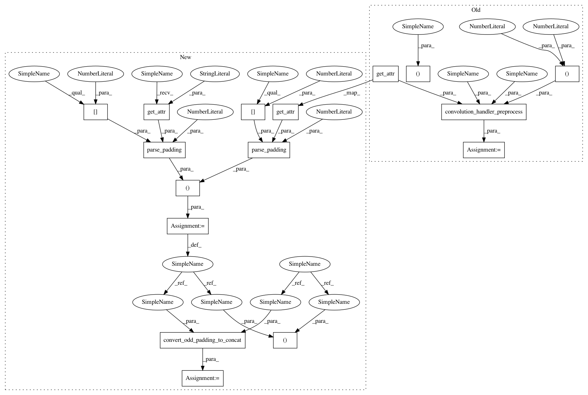

cb454682666fda678e5f2fabd4256d18bae6e50c,src/graph_transpiler/webdnn/frontend/tensorflow/ops/gen_nn_ops.py,,avg_pool_handler,#Any#Any#,33
Before Change
assert stride[x.order.axes_dict[Axis.C]] == 1
stride = (stride[x.order.axes_dict[Axis.H]], stride[x.order.axes_dict[Axis.W]])
x, padding = convolution_handler_preprocess(x, ksize=ksize, padding=tf_op.get_attr("padding"), dilation_rate=(1, 1),
data_format=data_format)
y, = AveragePooling2D(None, ksize=ksize, stride=stride, padding=padding, cover_all=False)(x)
converter.set_variable(tf_op.outputs[0], y)
After Change
@TensorFlowConverter.register_handler("AvgPool")
def avg_pool_handler(converter: TensorFlowConverter, tf_op: "tf.Operation"):
x = converter.get_variable(tf_op.inputs[0])
data_format = tf_op.get_attr("data_format")
check_data_format(x, data_format)
ksize = tuple(tf_op.get_attr("ksize")) // type: Tuple[int,...]
assert ksize[x.order.axes_dict[Axis.N]] == 1
assert ksize[x.order.axes_dict[Axis.C]] == 1
ksize = (ksize[x.order.axes_dict[Axis.H]], ksize[x.order.axes_dict[Axis.W]])
stride = tuple(tf_op.get_attr("strides")) // type: Tuple[int,...]
assert stride[x.order.axes_dict[Axis.N]] == 1
assert stride[x.order.axes_dict[Axis.C]] == 1
stride = (stride[x.order.axes_dict[Axis.H]], stride[x.order.axes_dict[Axis.W]])
paddings = (
parse_padding(tf_op.get_attr("padding"), ksize[0], 1),
parse_padding(tf_op.get_attr("padding"), ksize[1], 1),
)
x, paddings = convert_odd_padding_to_concat(x, paddings=paddings)
if any(p > 0 for p in paddings):
console.warning(
"[KerasConverter] keras.layers.AveragePooling computes average by dividing number of valid elements in window "
In pattern: SUPERPATTERN
Frequency: 3
Non-data size: 16
Instances
Project Name: mil-tokyo/webdnn
Commit Name: cb454682666fda678e5f2fabd4256d18bae6e50c
Time: 2017-12-27
Author: y.kikura@gmail.com
File Name: src/graph_transpiler/webdnn/frontend/tensorflow/ops/gen_nn_ops.py
Class Name:
Method Name: avg_pool_handler
Project Name: mil-tokyo/webdnn
Commit Name: cb454682666fda678e5f2fabd4256d18bae6e50c
Time: 2017-12-27
Author: y.kikura@gmail.com
File Name: src/graph_transpiler/webdnn/frontend/tensorflow/ops/gen_nn_ops.py
Class Name:
Method Name: max_pool_handler
Project Name: mil-tokyo/webdnn
Commit Name: cb454682666fda678e5f2fabd4256d18bae6e50c
Time: 2017-12-27
Author: y.kikura@gmail.com
File Name: src/graph_transpiler/webdnn/frontend/tensorflow/ops/gen_nn_ops.py
Class Name:
Method Name: avg_pool_handler
Project Name: mil-tokyo/webdnn
Commit Name: cb454682666fda678e5f2fabd4256d18bae6e50c
Time: 2017-12-27
Author: y.kikura@gmail.com
File Name: src/graph_transpiler/webdnn/frontend/tensorflow/ops/gen_nn_ops.py
Class Name:
Method Name: conv2_d_handler